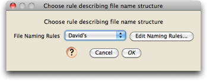
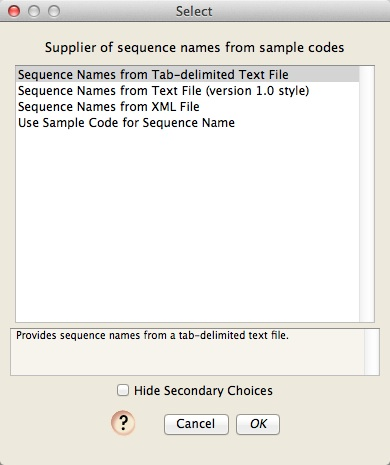
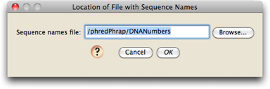
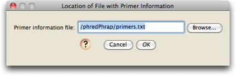
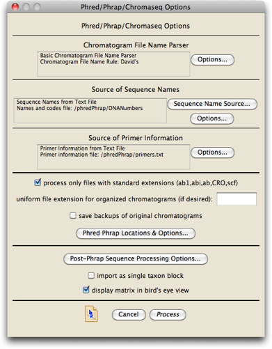

Preparing for Chromatogram Processing
Before beginning to process chromatograms, make sure you have:
- Installed Chromaseq, Phred, and Phrap
- Prepared the chromatograms
- Prepared the sample codes file and the primer information file
The first step in processing chromatograms
There are several ways Chromaseq can process chromatograms. You should first determine which of the following meet your needs, and begin the process by choosing the menu item mentioned:
- Process all of the chromatogram files in a directory, making base calls, contigs, and then creating matrices in a Mesquite project, one matrix for each gene, and filling the matrices with the sequences generated. This option is available under File>Open Other>Process Chromatogram Files in Directory.
- Process all of the chromatogram files in a directory, making base calls, contigs, and then appending the sequences to existing matrices in a Mesqutie project. If a matrix for a particular gene fragment doesn't exist in the project, it will be created. This option is available under Characters>Append Sequences from Chromatograms
- Process all of the chromatogram files in a directory, making base calls, contigs, but not reading the results in. This option is available under Utilities>Process Chromatograms. The Utilities menu is available when the Mesquite log window is frontmost.
- Segregate (into a subdirectory) all of the chromatogram file in a directory that meet specified critieria (e.g., that belong to a certain taxon, or that are part of a specified gene). This doesn't make base calls or contigs, it simply moves the specified files into a subdirectory. This option is available under Utilities>Segregate Chromatograms. The Utilities menu is available when the Mesquite log window is frontmost.
Your next choices
Once you ask to start the processing, you will be asked to make some choices before you get to the main processing dialog box. In particular, you will be asked to
1. Choose a file naming rule; if the appropriate naming rule hasn't already been created, you will need to create one.

2. Select a method to determine sequence names. You will be asked to choose among the two options available:

The only choices currently offered are to look up the names for sequences in a sample codes and sequence names file, or to simply use the sample code contained in the file name as the sequence name. If you choose to have the sequence names looked up in a file, you will be asked for the location of the file:

3. Select a text file that contains information about primers and genes:

These dialog boxes will only appear the first time you use Chromaseq. In later uses, Chromaseq will remember your choices, and will automatically use them as defaults. However, you do have an opportunity to change your choices, should you wish, in the Phred/Phrap/Chromaseq Options dialog box, described in the next section.
The Processing Options dialog box
At this point, you will be presented with the main dialog for processing chromatograms. After setting up the options, and pressing "Process", Chromaseq will start processing the chromatograms. Details of that process are described next, but first you need to set the options appropriately.

The top of this dialog also lists the choices you have just made about how file names should be processed, the source of names for sequences, and the source of primer information. There are also buttons beside these elements that allow you to alter your choices, in the event that you change your mind.
If you haven't already, you will need to tell Chromaseq where the helper programs are. You can do this by touching on the "Phred Phrap Locations & Options" button; details are on the Phred & Phrap Locations & Options page. On the same page are options within Phred and Phrap that you can set.
In addition, you have the following choice of options that involve preparation before the Phred and Phrap processing, and that involve the process itself:
- Choose whether to only process files with standard extensions (such as ".ab1" or ".CRO"). If you turn this option off, then Chromaseq will process all files in the directory, which will be problematic if you have additional files (such as ".seq" files) in the same directory.
- Choose whether to have the extension of the chromatograms changed to a specified extension when they are organized into their subdirectories. If you enter text in the "uniform file extension for organized chromatograms (if desired)" box, then any old extension to the file names will be removed, and they will be replaced by the extension you specify. If you don't specify any extension, the extension on the original file names will be used. We frankly can't remember why this feature was added, but we have left it in as we suspect there are some contexts in which this is valuable.
- Choose whether to have Chromaseq save a separate directory with copies of all of your original chromatograms in there. By default, Chromaseq will move all of the chromatograms into subdirectories, and rename the files in the process. If you wish to have backups saved of the chromatograms with their original file names, then check this box or save backups in some other way.
- Choose the location and options for Phred and Phrap, as well as the location for the phredpar.dat file.
You may also choose to alter the options for how Chromaseq processes the sequences after Phred and Phrap do their thing:
- Post-Phrap Sequence Processing Options: This dialog box specifies how Chromaseq processes the contigs and sequences after Phred and Phrap are done with them. By default, Chromaseq trims the sequences, searches for multiple peaks that should be given ambiguity codes (e.g., R or Y), etc.
- Choose whether or not a single or multiple taxon blocks should be created if there are multiple genes represented in the sequences. By default, Chromaseq creates a separate taxon block for each gene. However, if you check this option, only one taxon block will be created that will includes as taxa all of the distinct sequence names. This option is only available if you are importing the results into a a Mesquite project, i.e., if you have chosen File>Open Other>Process Chromatogram Files in Directory.
- Choose whether matrices that are created in Mesquite are opened up in a bird's eye view, or instead in the normal view.
What happens during chromatogram processing
Once you press the Process button, the following things happen:
- If you choose to save backups of the chromatograms, a directory called "originals" will be created, and copies of all of the chromatograms will be placed in there as backups.
- Chromaseq creates a "processed" directory in the directory containing the chromatograms.
- Chromaseq scans the chromatogram file names, finds the primer names contained within each, looks up the gene fragment each corresponds to, and accumulates a list of all available gene fragments represented among the chromatograms. It then creates one subdirectory within the "processed" directory for each gene fragment.
- For each gene fragment, it scans the corresponding chromatogram files and find all the files with the same one sample code. It creates a subdirectory in that gene fragment directory for that sample, names it according to the short sequence name, and moves all of the chromatogram files for that sample and that gene fragment into the subdirectory. In so doing, it renames the chromatogram files so that they meet Phred's requirements.
- Once the chromatograms are renamed and moved into their subdirectories, Chromaseq will create a shell script that will start up Phred and Phrap and ask them to process all of the chromatograms in each subdirectory. It will then invoke that shell script in the shell program of relevance for your computer's operating system. On a Mac, this will typically be the Terminal application; on Windows, it will be the Cygwin shell if that is what you installed; on a Linux variant, it will be the bash shell or something similar.
- Once Phred and Phrap are invoked, you should see a lot of text whizzing by in the shell program. If at this point you go back into Mesquite, and look in the log window, you will see that Mesquite is reporting on the progress of the analysis. For example, it might look something like this:
Phred Phrap processing of chromatograms as scripted by Mesquite
Processing directory: /ChromaseqExamples/Chromatograms
Using names and codes file: /ChromaseqExamples/SampleCodes.txt
Using primers file: /ChromaseqExamples/Primers.txt
Parameters: Phred Options: -id . -pd . -d
Phrap Options: -new_ace -qual_show 20 -vector_bound 0
Chromaseq Options:
Quality threshold for lower case: 49
Convert multiple-peaks sites to ambiguity codes: true
Minimum secondary peak fraction for ambiguity: 0.3
Trim low quality regions from ends: true
Quality threshold for trim: 20
Trim window length: 10
Trim window threshold: 5
---------------------------------------------------
Section 1: Examining chromatogram files and preparing directories
Preparing Bemb perspicuum AZ 1120 (COI)
Preparing Bemb louisella NS 1250 (COI)
Preparing Bemb louisella NS 1250 (28S)
Preparing Bemb perspicuum CA 2320 (28S)
Preparing Bemb paraenulum VA 1856 (COI)
Preparing Bemb perspicuum AZ 1120 (28S)
Preparing Bemb paraenulum VA 1856 (28S)
Number of files prepared: 7
---------------------------------------------------
Section 2: Renaming chromatograms for Phred and Phrap
A01_A01DNA1120_B1490_411940.ab1 renamed to DNA1120.b.B1490.ab1
A01_A01DNA1120_Bcoi2R_412036.ab1 renamed to DNA1120.g.Bcoi2R.ab1
C07_C07DNA1250_B1490_208508.ab1 renamed to DNA1250.b.B1490.ab1
C07_C07DNA1250_B2232_208604.ab1 renamed to DNA1250.g.B2232.ab1
C12_C12DNA1250_D3aR_572645.ab1 renamed to DNA1250.g.D3aR.ab1
C12_C12DNA1250_NLF184_572549.ab1 renamed to DNA1250.b.NLF184.ab1
F06_F06DNA2320_D3aR_552091.ab1 renamed to DNA2320.g.D3aR.ab1
F06_F06DNA2320_NLF184_551995.ab1 renamed to DNA2320.b.NLF184.ab1
H05_H05DNA1856_B1490_237723.ab1 renamed to DNA1856.b.B1490.ab1
H05_H05DNA1856_B2232_237819.ab1 renamed to DNA1856.g.B2232.ab1
H07_H07DNA1120_D1_394061.ab1 renamed to DNA1120.b.D1.ab1
H07_H07DNA1120_D3_394157.ab1 renamed to DNA1120.g.D3.ab1
H09_H09DNA1856_D1_237563.ab1 renamed to DNA1856.b.D1.ab1
H09_H09DNA1856_D3_237659.ab1 renamed to DNA1856.g.D3.ab1
---------------------------------------------------
Section 3: Execution of Phred-Phrap command file begun
.1. Bemb perspicuum AZ 1120 (Phred)
2. Bemb louisella NS 1250 (Phrap)
3. Bemb louisella NS 1250 (Phrap)
4. Bemb perspicuum CA 2320 (Phrap)
6. Bemb perspicuum AZ 1120 (Phred)
Phred & Phrap analyses completed.
---------------------------------------------------
Section 4: Mesquite processing of Phrap results
Processing ACE file: Bemb louisella NS 1250.ace
C12_C12DNA1250_D3aR_572645.ab1 (rev)
C12_C12DNA1250_NLF184_572549.ab1
Processing ACE file: Bemb paraenulum VA 1856.ace
H09_H09DNA1856_D3_237659.ab1 (rev)
H09_H09DNA1856_D1_237563.ab1
Processing ACE file: Bemb perspicuum AZ 1120.ace
H07_H07DNA1120_D3_394157.ab1 (rev)
H07_H07DNA1120_D1_394061.ab1
Processing ACE file: Bemb perspicuum CA 2320.ace
F06_F06DNA2320_D3aR_552091.ab1 (rev)
F06_F06DNA2320_NLF184_551995.ab1
Processing ACE file: Bemb louisella NS 1250.ace
C07_C07DNA1250_B2232_208604.ab1 (rev)
C07_C07DNA1250_B1490_208508.ab1
Processing ACE file: Bemb paraenulum VA 1856.ace
H05_H05DNA1856_B2232_237819.ab1 (rev)
H05_H05DNA1856_B1490_237723.ab1
Processing ACE file: Bemb perspicuum AZ 1120.ace
A01_A01DNA1120_Bcoi2R_412036.ab1 (rev)
A01_A01DNA1120_B1490_411940.ab1
========================
Section 5: Phred/Phrap processing report
Multi-read sequences obtained from the following genes and samples:
(28S) -- Bemb louisella NS 1250
(28S) -- Bemb paraenulum VA 1856
(28S) -- Bemb perspicuum AZ 1120
(28S) -- Bemb perspicuum CA 2320
(COI) -- Bemb louisella NS 1250
(COI) -- Bemb paraenulum VA 1856
(COI) -- Bemb perspicuum AZ 1120
========================
Processing of chromatogram files completed.
If it doesn't look something like this, or if the shell program has very little text that appeared in it, then something might have gone wrong. Check to make sure you followed the previous steps carefully. If it still doesn't seem to be working, you should check out the Troubleshooting page.
- Once Phred and Phrap have finished processing, Chromaseq will then examine each of the contigs produced by Phrap, and alter them as it deems appropriate, according to the options that were specified in the Post-Phrap Sequence Processing Options dialog box. For example, Phred and Phrap will never make a base call that is ambiguous. If there are two clear peaks at a particular site, representing both A and G, Phred and Phrap will always choose to call the base either A or G, never R. Chromaseq by default will look through the chromatograms for evidence of multiple peaks at a site, and change Phrap's base calls to ambiguity codes if there are. Chromaseq will also trim low-quality ends from the sequences. Chromaseq will keep a copy of Phred and Phrap's original contigs with the original calls (in the ".ace" file contained within the sequences subdirectory) and make a new "m.ace" file with the modified contigs. More details are on the Post-Phrap Sequence Processing Options page.
- If you have chosen to import the results into a Mesquite project (i.e., if you chose File>Open Other>Process Chromatogram Files in Directory), then Chromaseq will create a new Mesquite project, containing one matrix per gene fragment, and it will read in the sequences into those matrices; the matrices will be displayed with the color of the cells being related to the quality score of the base as judged by Phred and Phrap.
- Chromaseq will also produce a directory containing FASTA files, one for each successfully contig'd sequence, that will allow you to examine the results quickly. You can, for example, drop these files into another Mesquite matrix, which will allow you to add those sequences to another matrix.
At this point, if you wish, you can examine the chromatograms for a sequence using the Chromatogram Viewer.
You can also align the sequences, reverse complement them, etc. As long as you do this from within Mesquite, you should still be able to examine the chromatograms for a particular sequence and make base calls. However, if you make these alternations by saving the sequences to a file, opening up that file in another alignment program, then importing the alignment back into Mesquite, for example, the connection between the sequence and the chromatograms will be lost, and there is currently no way to reconnect them.